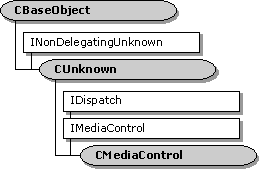

description: The CMediaControl class provides base class handling of the IDispatch methods of the dual-interface IMediaControl. It leaves as pure virtual the properties and methods of the IMediaControl interface. ms.assetid: 033a2de6-8046-408c-995f-ec2de6654c41 title: CMediaControl class ms.topic: reference ms.date: 4/26/2023 topic_type:
[The feature associated with this page, DirectShow, is a legacy feature. It has been superseded by MediaPlayer, IMFMediaEngine, and Audio/Video Capture in Media Foundation. Those features have been optimized for Windows 10 and Windows 11. Microsoft strongly recommends that new code use MediaPlayer, IMFMediaEngine and Audio/Video Capture in Media Foundation instead of DirectShow, when possible. Microsoft suggests that existing code that uses the legacy APIs be rewritten to use the new APIs if possible.]

The CMediaControl class provides base class handling of the IDispatch methods of the dual-interface IMediaControl. It leaves as pure virtual the properties and methods of the IMediaControl interface.
Typically, the filter graph manager is the only object that implements the IMediaControl interface. (filters implement the IMediaFilter interface, inherited by IBaseFilter, to receive control commands from the filter graph manager.) Therefore, this class library is of limited use to filter developers.
The CMediaControl::GetIDsOfNames, CMediaControl::GetTypeInfo, CMediaControl::GetTypeInfoCount, and CMediaControl::Invoke member functions are standard implementations of the IDispatch methods using the CBaseDispatch class (and a type library) to parse the commands and pass them to the pure virtual methods of the IMediaControl interface.
The IMediaControl methods, defined in control.odl, are left as pure virtual.
| Member Functions | Description |
|---|---|
| CMediaControl | Constructs a CMediaControl object. |
| IDispatch Methods | Description |
| GetIDsOfNames | Maps a single member and an optional set of parameters to a corresponding set of integer dispatch identifiers (DISPIDs), which can be used during subsequent calls to the CMediaControl::Invoke method. |
| GetTypeInfo | Retrieves a type-information object, which can retrieve the type information for an interface. |
| GetTypeInfoCount | Retrieves the number of type-information interfaces provided by an object. |
| Invoke | Provides access to properties and methods exposed by an object. |
Â
Â
Â